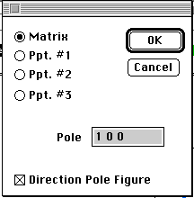

Distributed By: Virtual Labs
User Defined Pole Figure
PATH...{Stereographic Projection Object}:Pole Figures:Plot Pole Figure:User
Defined...
Plotting Pole figures can help give a deeper understanding of the relationship
between outside physical forces and the alignment of crystals, due either
to effects on growth or on the deformation of the crystal grains. Desktop
provides a number of standard pole figures, however there may be cases when
the provided pole figures are inadequate to explore the true experiment.
For these situations, you may wish to use the User Defined Pole Figure Dialog
Box.

Author: J.ames
T. Stanley
 Desktop
Manual:Dialog Boxes
Desktop
Manual:Dialog Boxes
Distributed By: Virtual Labs
Last Updated:1/12/96 Sat, Apr 27, 1996